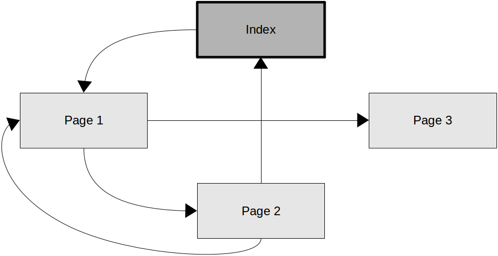
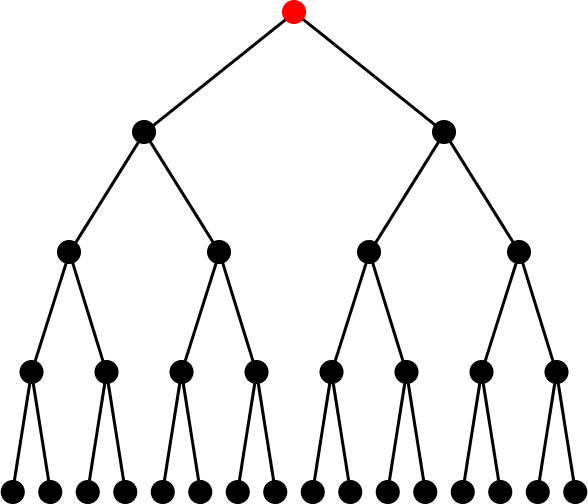
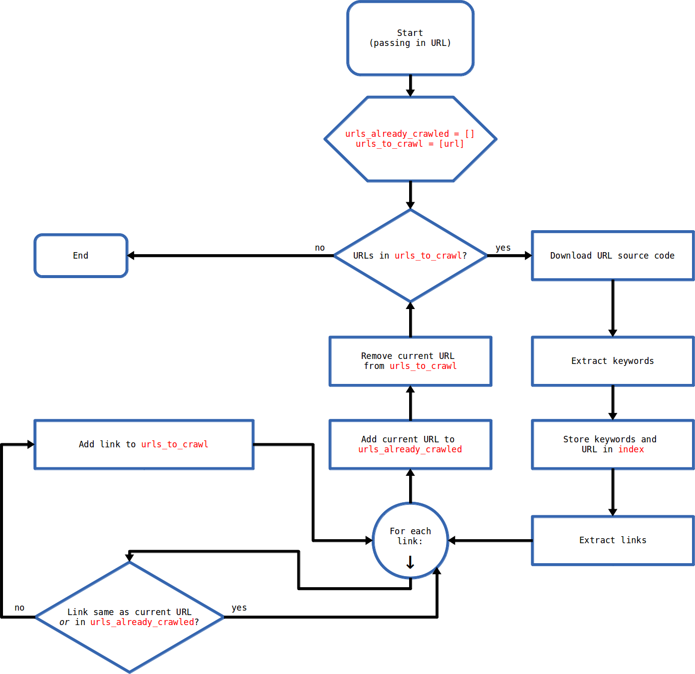

Search Engine: Part 4
We're almost done with the crawling part of our search engine! Here's the status of our project.
- crawl the web, which will involve:
- receiving a seed page's URL
- downloading the contents (or _source code_) of the seed page
- getting links out of the seed page's source code
- getting keywords out of the seed page's source code
- associating the keywords with the seed page's URL and storing those associations in an index
- following all of the links from the seed page, and performing the above steps on them
- rank results as people click on them or as more pages link to them and then sort the index so that it returns the most highly-ranked results first
- return results when someone searches for a keyword
The last step in the crawling process will involve taking the links from the seed page and crawling over them (extracting keywords and associating them with the page's URL in the search index, and extracting links and crawling over them in turn). Look at the "map" of our sample pages below. I've drawn arrows to indicate how the pages link to one another.

There are two hurdles to overcome in this lesson. First, we'll need to consider what would happen if a page linked back to a page that we've already crawled. Second, we need to consider the order in which links will be crawled.
Perhaps you can see the first problem via the image above: what will happen if a page links back to a page that we've already crawled? If we don't consider this problem when designing our crawler, we'll end up crawling around and around in an infinite loop. Eventually, our computer will probably run out of memory or storage space or both, and then the program will crash. In short, we just need to make sure that we don't re-crawl pages that have already been crawled. (Obviously, we'll need to re-crawl them at some point in the future just to make sure that things haven't changed since our last visit, but we don't want to re-crawl a page within the same crawl session.)
The solution is probably pretty easy to see: we just need to keep track of the pages that we've already crawled, and the easiest way to do that is probably to store them in an array. I'm just going to make an array called `urls_already_crawled`. Every time that we crawl a page, we'll append its URL to this list.
|
urls_already_crawled = []
|
Now we come to the bigger hurdle: in what order should we crawl links? There are basically two options available to us: we can do a ~depth-first crawl~ or a ~breadth-first crawl~.
In a depth-first crawl, we crawl deeply before we crawl broadly. That is, we go to a page and crawl the first link that we find, and then crawl the first link that we find on _that_ page, and then the first link that we find on _that_ page, _ad infinitum_. Only when we hit a dead end do we back up and crawl secondary links. Perhaps a graphic will explain better than words.

In a breadth-first crawl, on the other hand, we crawl broadly before we crawl deeply. That is, we go to a page and get all of the links that we find, and then we follow them one-by-one (but only to the very next layer; not infinitely, as in the depth-first search). Again, a graphic will help.
Does it matter which one we use for our search engine? Does one perform better than the other? Will one give us a better index than the other? Well, there are considerations for each, and it depends on what kind of results we want our search engine to give. Since we'll almost always be limited by time and storage constraints, we'll have to ask our crawler to stop crawling at some point -- and the type of crawl that we've just completed will have filled our index with different kinds of results. You can imagine that a depth-first crawl will take us a very long way away from our seed page before backing up (if ever), which could mean that the pages that we crawl may eventually seem unrelated to our starting point. This might be good if we're looking to have lots of variety in our search results. On the other hand, if we want our results to be very closely related to each other, then we might want to do a breadth-first crawl. It'd be interesting to ask people who work in the Search Engine Optimization field whether they prefer one or the other (or whether they use some fancier crawl order algorithm, which is almost certainly the case). In the meantime, however, we'll just have to pick one and implement it. I'm going to go with a breadth-first crawl, primarily because it just looks cleaner to me, and because it'll probably be better (at first) for our results to be closely related to each other.
Now we need to begin to craft our crawl function. We need to take into account (1) not re-crawling pages that have already been crawled, and (2) examining each "layer" of links before moving to the next "layer" (i.e., breadth-first crawling). Instead of writing in pseudo-code like we usually do, I think that we should make a ~flow chart~ this time. Flow charts are another good way of visualizing and understanding the steps of a problem. Here's the one I propose.

Now we just need to convert the flow chart to actual code and append it to our ever-expanding `search.py` file.
|
import urllib
import string
index = {}
def get_links(source):
# stuff from part 1
def get_keywords(source):
# stuff from part 2
def add_to_index(url, keywords):
# stuff from part 3
def crawl(seed_page_url):
urls_to_crawl = [seed_page_url]
urls_already_crawled = []
while len(urls_to_crawl) > 0:
url = urls_to_crawl[0]
source = urllib.urlopen(url).read()
keywords = get_keywords(source)
add_to_index(url, keywords)
links = get_links(source)
for link in links:
if link != url and link not in urls_already_crawled and link not in urls_to_crawl:
urls_to_crawl.append(link)
urls_to_crawl.remove(url)
urls_already_crawled.append(url)
|
Great! This code should work perfectly as a breadth-first crawl that doesn't re-crawl pages that have already been crawled. The last step, then, is to provide the crawler with some kind of stop condition; otherwise, it will always keep crawling as long as there are URLs listed in the `urls_to_crawl` list, which will probably always be the case if we have a seed page that's sufficiently robust (such as a Wikipedia article). For now, we'll just stop after a certain number of crawls.
|
import urllib
import string
index = {}
def get_links(source):
# stuff from part 1
def get_keywords(source):
# stuff from part 2
def add_to_index(url, keywords):
# stuff from part 3
def crawl(seed_page_url):
urls_to_crawl = [seed_page_url]
urls_already_crawled = []
crawls = 0 ### this will keep track of the number of crawls
while len(urls_to_crawl) > 0 and crawls < 50: ### I added the stop condition here
url = urls_to_crawl[0]
source = urllib.urlopen(url).read()
keywords = get_keywords(source)
add_to_index(url, keywords)
links = get_links(source)
for link in links:
if link != url and link not in urls_already_crawled and link not in urls_to_crawl:
urls_to_crawl.append(link)
urls_to_crawl.remove(url)
urls_already_crawled.append(url)
crawls += 1 ### increment every time we crawl
|
The complete `search.py` file for this lesson can be downloaded here: https://github.com/phscs/search_engine/archive/0.4.zip.
UPDATE (3/21/14): I forgot to add this, but Michael pointed out in our lesson at school that the algorithm in the flow chart above is incomplete. The code has been updated to reflect the bug-free version of the algorithm, but since I've lost the origin flow chart file and don't want to take the time right now to recreate it, I'll just ask you to kindly ignore the mistake in the flow chart and focus solely on the code. Thanks!